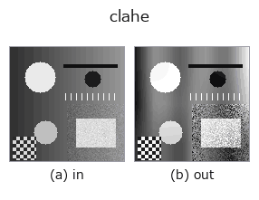

gray op• Data kinds: image → image
• Call: fullseye.apply(img, "clahe", a=0.5, b=0.5) (2-D model = एक image + दो scalar knobs a,b∈[0,1])

*Figure synthetic 128×128 input पर सच में चलाकर मिला output है। बाईं ओर input, दाईं ओर output। Point clouds ऊपर से देखे गए scatter के रूप में (brightness = z), 1-D series line के रूप में, volumes z दिशा में maximum-intensity projection के रूप में, videos बीच के frame के रूप में, complex images amplitude के रूप में, और जो return values चित्र नहीं बन सकते वे स्वयं values के रूप में दिखाए जाते हैं।*
Knob a को बदलकर (0.1 / 0.5 / 0.9, दूसरा knob default पर):
▸ clahe: knob a को बदलने का figure (docs site)
Knob b को बदलकर (0.1 / 0.5 / 0.9, दूसरा knob default पर):
▸ clahe: knob b को बदलने का figure (docs site)
दूसरी images पर भी (synthetic scene / photo / coins। ऊपर की row में inputs, नीचे की row में उनके outputs। Knobs default पर):
▸ clahe: दूसरी images पर output (docs site)
*चौथा column colour (H,W,3) input है। यह op channels को पार किए बिना colour संभालता है (colour channel को तीसरे spatial axis की तरह convolve नहीं करता)।*
Contrast-Limited Adaptive Histogram Equalization (tiles में, bilinear रूप से मिलाया गया)।
• a — tile की संख्या nb = 2 + int(3a) (image को nb×nb में बाँटा जाता है)
• b — clip limit। इसे प्रति bin औसत count के सापेक्ष गुणक 256**b के रूप में दिया जाता है (b=0 → 1 गुना = पूरी तरह flat किया गया histogram = सीधी tone map = शून्य enhancement; b=1 → 256 गुना = 1 bin का अधिकतम संभव value, इसलिए clipping काम नहीं करती = सादा AHE; b=0.5 → 16 गुना। OpenCV का default clipLimit=40 लगभग b=0.665 है)।
★2026-09-02 (यह सुधार): तब तक b पूरी तरह निष्क्रिय था (मापा गया:
max|clahe(x,0.5,0.0) - clahe(x,0.5,1.0)| == 0.0 बिल्कुल)। CLAHE का "C" contrast limited का C है, और clip limit ही वह चीज़ है जो AHE और CLAHE को अलग करती है, इसलिए implementation AHE था, CLAHE नहीं — नाम झूठ बोल रहा था। यहाँ clip limit implement करके b को दिया गया, और गुणक इस तरह चुना गया कि b=1 वह सिरा हो जो पुराने implementation से bit-identical है (वह ऊपरी सीमा जहाँ clipping नहीं होती = bin की संख्या 256 गुना)।
tile image को PARTITION करते हैं (सीमाएँ linspace से, इसलिए आखिरी tile H % nb / W % nb का शेष सोख लेती है), हर tile का clip-limited CDF उसकी local tone map है, और हर pixel अपने (अधिकतम) 4 सबसे नज़दीकी tile केंद्रों की map को bilinear weight से मिलाता है — यह मानक CLAHE interpolation (Zuiderveld 1994) है।
2026-08-30: interpolation जोड़ा गया (KNOWN_ISSUES #4 — पुराना implementation हर tile को स्वतंत्र रूप से flat करता था, जिससे tile की सीमाओं पर असंततता (नंगी आँख से दिखने वाला grid) आती थी)। tile केंद्र के आसपास के क्षेत्र में उसी tile का CDF जैसा का तैसा हावी रहता है, इसलिए यह पुराने implementation जैसे ही mapping परिवार का continuous version है।
• gallery2d_gray_arith family guide
• Sample data catalog (DL URL / license) — 2-D के लिए skimage.data (BSD/public) + synthetic, 3-D के लिए real data sources (Stanford/PDS आदि) के DL URL।
• Operators का स्रोत और संदर्भ — इस op family के मूल research/methods के स्रोत।
• Algorithm का मानक स्रोत (लेखक, वर्ष) और उपयोग ऊपर की family usage guide में दिए गए हैं।
नीचे का program सच में चलता है, यह जाँचा गया है (figure वाला ही input)। Studio की help में यह block buttons बन जाता है, जिनसे इसे वहीं load करके चलाया जा सकता है।
clahe 0.50 0.50
▸ यह pipeline load करें · Load करके चलाएँ
• gallery2d_gray_arith — py -3.11 examples/gallery2d_gray_arith.py
• poc_dehazing — py -3.11 examples/poc_dehazing.py
image को input के रूप में लेते हैं)identity · gaussian · mean_box · bilateral · unsharp · median · min_filter · max_filter
gray)gamma · quantize_uniform · quantize_lloyd_max · quantization_error · dither_ordered · dither_floyd_steinberg · companding_mu_law · banding_map
*Provenance: ops.py — 2D operator registry. यह per-op note tools/opdocs.py md से अपने-आप generate होता है (हाथ से edit न करें)।*
© 2026 Kazufumi Furuse — Fullseye operator documentation. Licensed under Apache-2.0.